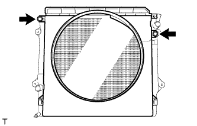
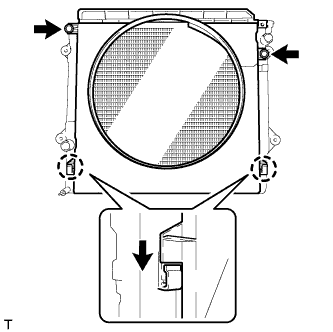

НАСОС СИСТЕМЫ ОХЛАЖДЕНИЯ > ПРОВЕРКА БЕЗ СНЯТИЯ С АВТОМОБИЛЯ |
| 1. REMOVE FAN SHROUD |
 |
Loosen the 4 nuts holding the fluid coupling fan.
Remove the vane pump V belt and the fan and generator V belt (See page Нажмите здесь).
|  |
Remove the 2 bolts holding the fan shroud.
Remove the 4 nuts of the fluid coupling fan, and then remove the shroud together with the coupling fan.
Remove the fan pulley from the water pump.
| 2. INSPECT WATER PUMP ASSEMBLY |
Visually check the air holes for coolant leakage.
| *1 | Air Hole |
Turn the pulley, and check that the pump bearing moves smoothly and quietly.
If the bearing moves roughly or noisily, replace the water pump assembly.
| 3. INSPECT FLUID COUPLING ASSEMBLY |
 |
Remove the 4 nuts and fan.
 |
Check the fluid coupling for damage or silicon oil leaks. If necessary, replace the fluid coupling.
Install the fan with the 4 nuts.
| 4. INSTALL FAN SHROUD |
Install the fan pulley to the water pump.
Install the shroud together with the coupling fan between the radiator and engine.
Temporarily install the fluid coupling fan to the fan pulley with the 4 nuts. Tighten the nuts as much as possible by hand.
|  |
Attach the claws of the shroud as shown in the illustration.
Install the shroud with the 2 bolts.
Install the fan and generator V belt and vane pump V belt (See page Нажмите здесь).
Tighten the 4 nuts of the fluid coupling fan.